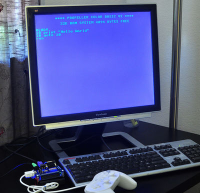
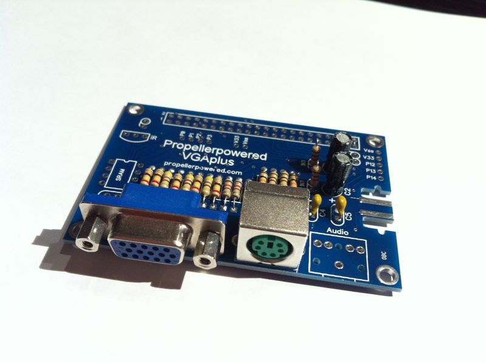
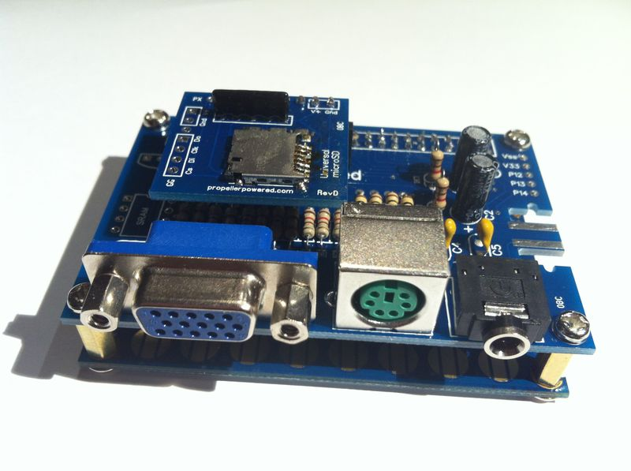

Мини-компьютер на базе микроконтроллера Parallax Propeller
Микроконтроллер фирмы Parallax под названием Propeller, в сравнении с “классикой” жанра типа PIC или AVR занимает несколько странную нишу. Про первые два можно сказать, что это архитектуры общего назначения. Создатели же Пропеллера подошли к вопросу “с фланга”.
Основные отличительные особенности Пропеллера:
- 8 независимых ядер, работающих параллельно. Какое-либо разделение времени, необходимое для общих ресурсов типа памяти или портов ввода-вывода не контролируется программистом и “вшито” в кристалл. Это дает предсказуемость во времени выполнения кода. Каждое ядро (cog) имеет 4КБ собственной изолированной оперативной памяти. Также каждое ядро имеет встроенный аппаратный модуль для генерации (внимание!) ТВ или VGA видео-сигнала.
- Нет понятия прерываний. Вместо это предлагается запускать конкурирующие задачи разных ядрах (cog’ах).
- Программировать можно либо на ассемблере, либо на особом высокоуровневом языке Spin, который сильно упрощает многоядерное и параллельное программирование. Интерпретатор Spin зашит в кристалл.
- Почти нет понятия программации или прошивки кристалла. Верхняя половина адресного (ROM) пространства размером в 32КБ прошита интерпретатором Spin и разными системными таблицами. В этом случае при каждом включении требуется загрузка программы извне (например, из среды разработки) в нижнюю область 32КБ (RAM). Но обычно в реальном использовании подключается внешняя I2C микросхема памяти EEPROM, содержимое которой автоматически копируется в RAM при включении кристалла.
- Процессор заявлен как 32-х битный, так как оперирует со данными этого размера, но адресное пространство 16-и битное (64КБ).
Язык Spin разработан для удобного многопроцессорного программирования, и выглядит как нечто среднее между процедурным и объектно-ориентированным языком.
Вот пример кода на Spin, запускающего функцию крутиться на нескольких ядрах. Код реально простой и понятный.
CON
_clkmode = xtal1 + pll16x 'Establish speed
_xinfreq = 5_000_000 '80Mhz
OBJ
led: "E555_LEDEngine.spin" 'Include LED methods object
VAR
byte Counter 'Establish Counter Variable
long stack[90] 'Establish working space
PUB Main
cognew(Twinkle(16,clkfreq/50), @stack[0]) 'start Twinkle cog 1
cognew(Twinkle(19,clkfreq/150), @stack[30]) 'start Twinkle cog 2
cognew(Twinkle(22,clkfreq/100), @stack[60]) 'start Twinkle cog 3
PUB Twinkle(PIN,RATE) 'Method declaration
repeat 'Initiate a master loop
repeat Counter from 0 to 100 'Repeat loop Counter
led.LEDBrightness(Counter, PIN) 'Adjust LED brightness
waitcnt(RATE + cnt) 'Wait a moment
repeat Counter from 100 to 0 'Repeat loop Counter
led.LEDBrightness(Counter,PIN) 'Adjust LED brightness
waitcnt(RATE + cnt) 'Wait a moment
Функция cognew запускает задачу на трех ядрах, параметризируя каждую
своей частотой и стеком.
Упрощенно Пропеллер устроен следующим образом:
Название “Пропеллер” произошло от его модели передачи приоритета на доступ к разделяемым ресурсам. Модуль Hub, контролирующий разделение времени, делает это по кругу, типа крутящегося пропеллера.
Я не хочу в этой статье углубляется в сам Пропеллер, ибо это большая тема. Для интересующихся в конце есть ссылки на книги, в которых можно получить исчерпывающую информацию об этом микроконтроллере.
Но хочу рассказать об одном интересном проекте, который называется “Pocket Mini Computer”. Это мини-компьютер на базе Пропеллера (P8X32A), использующий evaluation board “P8X32A QuickStart” как основу.

Выглядит это добро следующим образом (фотография с официального сайта):

Фактически, автор продает evaluation board плюс плату расширения, на которой есть VGA, microSD, PS/2, звук и Wii Gameport. Опционально можно поставить микросхему оперативки SRAM на 32КБ.
Фишка проекта в том, что автор разработал интерпретатор Бейсика, который превращает все это в микро-компьютер а-ля 80-е. Бейсик написан на Spin’e (исходники открыты). Диалект весьма ограничен, например, нет массивов, строковых и вещественных переменных, имена переменных только однобуквенные и т.д. Но тем не менее, дается доступ ко всей периферии, включая SD-карту, и также позволяет запускать чисто двоичные файлы, которые могут быть написаны хоть на том же Spin’e, хоть на С (Parallax имеет версию GCC для Пропеллера), хоть на ассемблере.
Далее несколько фотографий конструктора, чтобы было понятно, что дается в наборе. Как я уже говорил, основа PMC - это готовая плата “P8X32A QuickStart”, поэтому спаять надо только плату расширения.


Почти все запаяно.

Бутерброд в сборе.



Вот небольшая демка, чтобы оценить графические возможности.
Общие впечатления
Пропеллер
Не получается назвать его процессором общего назначения. По моему субъективному мнению, для эффективного использования Пропеллера надо очень хорошо понимать свою прикладную задачу. Например, у Пропеллера нет ШИМ, ЦАП/АПЦ, встроенной флеш-памяти, триггеров, понятия прерываний, и создатели предлагают либо реализовывать необходимое программно, используя силу нескольких ядер, либо использовать специализированные внешние микросхемы. В книгах, приведенных в конце, описано множество примеров работы с дополнительными микросхемами.
Интересно другое. Создатели Пропеллера не забоялись отойти от традиционного подхода и попытались вложить в кристалл конкретные прикладные возможности, почти готовые задачи. Может для каких-то проектов это придется очень кстати. Как я понял, Пропеллер очень удобен для создания разного рода игровых автоматов и приставок, например, из-за встроенной возможности генерировать качественный телевизионный и VGA сигнал.
Вывод: интересная архитектура, определенно заслуживающая внимания.
Конструктор PMC
Опять-таки, двоякое ощущение. Вроде работает, но ресурсов Бейсику явно не хватает, особенно памяти. Например, тот же Maximite на базе PIC32 его на голову превосходит. На нем можно запустить хоть RetroBSD, хоть Радио-86РК. Да и встроенный MMBasic несравнимо мощнее.
Хотя, за 39 долларов США - это отличная игрушка для тех, кто хочет пощупать Пропеллер, имея уже собранное устройство.
На закуску
Книги по Пропеллеру, которые я прочитал, что касаемо архитектуры, и проглядел (что касаемо проектов). Все рекомендую.
Небольшая и очень понятная книга для начинающих. Описаны (с картинками) интересные проекты. Один из соавторов является конструктором PMC.
Getting Started With the Propeller

Крайне грамотная книга в плане архитектуры и понимания сути Пропеллера. В ней рассматривается только программирование на Spin, но с полным объяснением подходов и особенностей микроконтроллера. Прочитав первую главу, вы получите почти полное понимание архитектуры. Далее описаны несколько проектов (это можно пропустить).
Programming the Propeller with Spin : A Beginner’s Guide to Parallel Processing (Tab Electronics)

Сборник реальных проектов с использованием Пропеллера от его создателей.
Programming and Customizing the Multicore Propeller Microcontroller : The Official Guide

{kind=link}
На момент написания этой статьи, первая книга доступна только в формате Киндл на Амазоне по цене в два доллара, а вот вторую и третью можно найти, если поискать.
Disclaimer